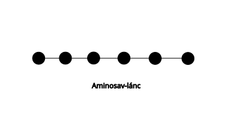
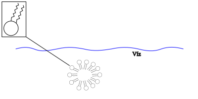
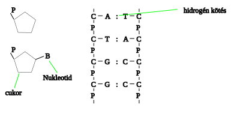

Sejteket felépítő szerves molekulák
Szénhidrátok (cukrok)
- Szerves anyagok nagy része $C$, $H$, $O$ atomok építik fel
- 5 $C$ atomnál több gyűrűvé záródnak
Mono szaharid (szőlőcukor)
- Egy gyűrűből áll
- 6 $C$ atomos: glükóz molekula (növények állítják elő fotoszintézissel) :memo: ez keletkezik legelőször
Fruktóz (gyümölcscukor)
- 5 $C$ atomos
- ribóz
- dezoxiribóz (1 $O$ atommal kevesebb)
- ez a kettő nukleotid
Diszaharidok
- 2 gyűrű
- szaharóz (répacukor)
- tejcukor (laktóz)
- cellobióz (equador)
- malbóz (axiális)
Poliszaharidok (sok gyűrű több 100 vagy 1000)
- cellulóz
- vízben nem oldódik a sejtfal anyaga (fa, papír)
- keményítő
- spirális molekula, több száz glükóz
- a keményítő, tartalék tápanyag
Fehérjék
Minden sejt alap építő elemei. Összetett nagy molekulák, amelyek aminosvakból épülnek fel.

Fehérjék szerkezete:
- Elsődleges:
- ez határozza meg a többi sorrendet - aminosav sorrend
- Másodlagos:
- $\alpha$ hélix:
- $\beta$ redő:
- Harmadlagos:
- szál alakú - fibrilláris
- ha másodlagos szerkezete egyféle - alfa hélix vagy beta redő
- pl.: pókselyem, hernyóselyem, haj, köröm
- gombolyag - globuláris
- mindkét szerkezet megtalálható benne
- pl.: enzimek
- Negyedleges:
- több fehérjeszál kapcsolódik össze
- hemoglobin
- tulajdonságai:
- vízben jól oldódnak, hidrátburkuk van, ha ezt elveszítik, kicsapódnak (denaturáció)
- visszafordítható: reverzibilis pl.: hús sózásánál
- vissza nem fordítható: irrreverzibilis pl.: tojás melegítése, nehézfémsók
- biológiai szerepe:
- sejtépítő, szállítás, kémiai folyamatokat katalizálnak, véralvadás
Zsír, olaj
Zsírok általában állatokban vannak és szilárdok (kivétel: halolaj), olajok pedig növényekben találhatóak (Kivétel: kókuszzsír). Az olajok és zsírok energia tárolók.
Szerkezetük:
Glicerin:
- $CH_{2}$ csoportok: 15-17-24
- Zsírok: olajsav, szterinsav, linolinsav, palmintisav
Olajsav:
Kettős oldékonyság:
Határhártyákat alakítanak ki (sejtfal)

Foszforitid kettős réteg:
Szteránvázuk van, melynek sokféle oldallánc kapcsolódhat hozzájuk:
pl.: epesavak, hormonok (pl.: nemi), koleszterin, D-vitamin
Színanyagok
Konjugált (kettős kötés), minden 2. kötés kettős kötés, energia gerjesztődik, ezért színes lesz.
- karotin - sárga (sárgarépa)
- likopin - piros (paradicsom)
- xantofil - sárga
- A-vitamin - látóbíbor kialakításáért felelős
Nukleinsavak
- Nukleotid származékok
- $5C$ atomos cukor - ribóz, dezoxiribóz
- Foszforsav
- $H_{3}PO4$
- jelölés: $P$
- Szerves bázis
- egygyűrűs: citozin, timin, uracil
- kétgyűrűs: ademin, guanin
- DNS (kettős spirál)
- 4 féle szerves bázis: C, T, A, G

A két szál egymást kölcsönösen meghatározza, tehát a DNS képes megkettőződni:
- RNS (ribóz foszforsav bázis)
- 1 szál
- mRNS - hírvivő -> genetikai kód
- tRNS - szállító -> aminosavak szállítása
- rRNS - riboszóma -> fehérjeszintézis helye
- Nukleotid származék
- ATP - ADP - AMP
- NAD - NADH
energia szállító molekula, hidrogén szállító molekula